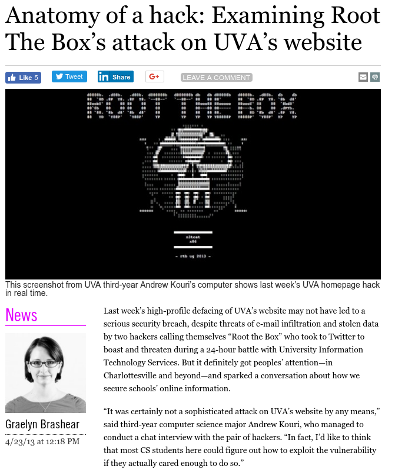
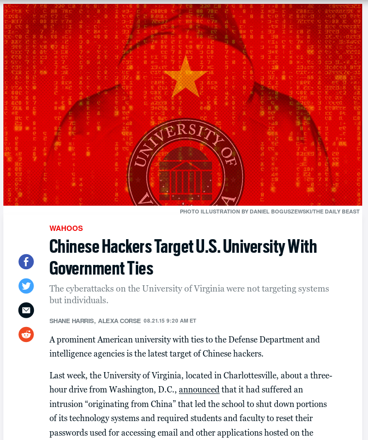
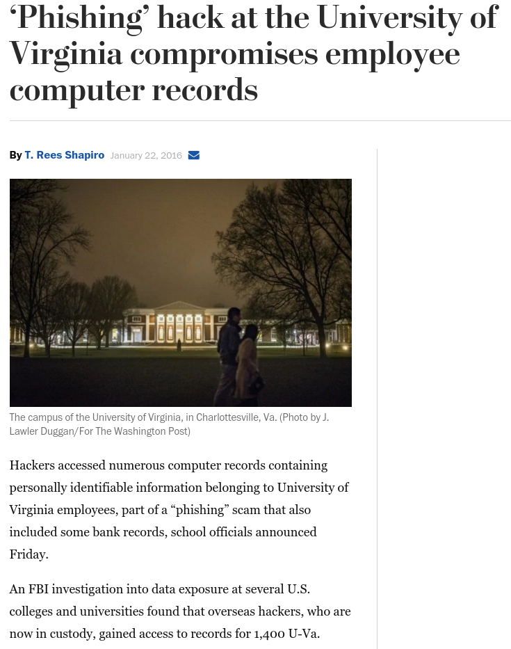

# Contents [Motivation](#/motivation) [Course Structure and Logistics](#/course) [Honor Policy](#/honor) [Prerequisites](#/prereqs) [Legal Issues](#/legal)
# Motivation
## So many network attacks - The [72 biggest data breaches of all time](https://www.upguard.com/blog/biggest-data-breaches) - [Cryptocurrency scams and attacks](https://web3isgoinggreat.com) - Cyber-warfare, such as [Stuxnet](https://en.wikipedia.org/wiki/Stuxnet) - [The 8 Most Notorious Malware Attacks of All Time](https://www.makeuseof.com/most-notorious-malware-attacks-ever/) - The list goes on and on...
A UVa hack (2013)
 (
source
)
Another UVa hack (2015)
 (
source
)
Yet another UVa hack (2016)
 (
source
)
# Course Structure and Logistics
## Instructional Staff <p style='text-align:center'>Aaron Bloomfield</p> <p style='text-align:center'>Rice Hall, room 402<br>aaron@virginia.edu</p> ## Course resources - Contained in the [Canvas](https://canvas.its.virginia.edu/) workspace: landing page of links, Piazza, Gradescope, lecture videos, files download, anonymous feedback - And a link to the support requests tool - External course materials - Most of the course materials can be found online at <br> [https://aaronbloomfield.github.io/nws](https://aaronbloomfield.github.io/nws) - Or via the github repo at <br> [https://github.com/aaronbloomfield/nws](https://github.com/aaronbloomfield/nws) ## Contacting Us - Feel free to chat with me right after any class - Although I teach another class right after this, so it will have to be quick - Please fill out a support request instead of emailing me - Linked to from the Canvas landing page - Office hours will start next week - Anonymous feedback through Canvas ## Contacting You - The [daily announcements slide set](../uva/daily-announcements.html) - If you miss lecture, you are responsible for checking it! - Anything else that is "urgent" will be posted to Piazza as an instructor note - VERY few notifications (possibly none!) will be sent out as a course email - How to do this is non-intuitive in Canvas - Thus, you have to check two places for updates: the [daily announcements slide set](../uva/daily-announcements.html) and Piazza - But if you log into Piazza via Canvas, then that one action will check two of them ## Meetings - Lectures: M/W/F 10:00-10:50 in beautiful Olsson 018 - Lectures are required - There will be occasional reading quizzes and attendance taking in lecture - If you have to miss a lecture, there is a Google form for you to fill out - Linked to from the Canvas landing page - Please don't email me or send in a support request that you are going to miss a lecture! - These generally have to be in before class starts - Reasonable exceptions for unexpected circumstances and emergencies, of course ## Expectations - Pre-requisite: CS 3710 (Introduction to Cybersecurity) with a grade of C- or higher - This is a strict pre-req! - Reason: this course builds upon the material in that course ## Homeworks - There will be a combination of: - Larger programming homeworks (about a dozen): the 'P' homeworks - Smaller ('S') homeworks, such as tutorials and readings - Often one of each may be assigned at any given time - But their due dates will be staggered - You can see them all on the [homeworks page](../hws/index.html) - Please don't start them early! - I'm creating many of them new this semester - I'll have them ready a week or so before they are due - And I will clearly announce when that happens - Either in the daily announcements or on Piazza ## HW submission: Gradescope - We will be using [Gradescope](https://gradescope.com) - All assignments will be ***autograded*** - The specifications and *some* test cases will be included in the homework descriptions - Gradescope will use the same *type* of tests, but with different data - You may submit as many (reasonable!) times to Gradescope as you want before the deadline passes - Gradescope submissions will open 3 days (72 hours) before the due date/time ## Piazza - We all know [Piazza](https://piazza.com) - If the e-mail settings default to "send annoying emails all the time", you can easily change this - In Piazza, in the upper-right, click on the gear/settings icon, select "Account/Email Settings", and then select "Edit Email Notifications" under "Class & Email Settings" - Rules - Don't post any code on it, period (that's an honor violation!) - Note that you can post anonymously to each other, but the course instructional staff will know who you are - If you start trolling other students on Piazza, I will permanently ban you from it - Please be respectful of your fellow students in the course! ## Development environment - You will have to have a (working and recent) notebook computer for this course - Don't have one? Speak to me, and the dept can loan you one - You can use any development environment you want (Windows, Mac, Linux; IDEs are okay also) - We will be using Docker for much of the test environments in this course <!-- .slide: class="right-float-img-800 no-border" --> ## Required Textbook  - Internet Security: A Hands-on Approach, 3rd Edition (ISBN: 978-17330039-6-4) - $53 on [Amazon](https://www.amazon.com/dp/1733003967) - The bookstore doesn't have it - If this causes a problem for you, please speak to me - Chapters will be assigned as readings - The lectures will then review that material - Occasional reading quizzes will be had to check that you read the chapter ## Course syllabus - It is available in the github repo - Click [here](http://aaronbloomfield.github.io/nws/uva/syllabus.html) to view it - It contains all the information covered so far, plus some more information ## Grades - Grades are computed by: - 10% class participation (in-class quizzes) - 45% homeworks - 20% midterm: Wednesday, October 11th, in class - 25% final exam: Thursday, May 9 from 9 am to noon - That's the second worst final exam time... ## Alternative final exam - This may well happen - No idea what or how - The grade weighting will likely change - More info later... ## Learning your names... I am determined to learn each of your (first) names So if you raise your hand in lecture, and I don't call on you by name, you have to say your first name before your question Don't be offended if it takes me a while -- there are 100 students in this course... ## Course Goals - Understand network models, both OSI and TCP/IP - Understand how to analyze network traffic and how to scan for malware therein - Understand the details of common network attacks, as well as their defenses (ARP, DOSes, etc.) - Understand the common network services that help to secure a network (DNSSEC, VPNs, PGP, firewalls, etc.) - Understand the role and use of cryptography in network security (AES, RSA, DHE, TLS, etc.) - Be able to secure a network from outside attacks ## Lecture topics You can see the slides on the [lecture slides page](../slides/index.html) <table class="transparent"><tr><td> - [Network Security Basics](https://www.handsonsecurity.net/files/slides/N01_Network_Basics.pptx) - [MAC Layer and Attacks](https://www.handsonsecurity.net/files/slides/N02_MAC_ARP.pptx) - [IP Layer and Attacks](https://www.handsonsecurity.net/files/slides/N03_IP_ICMP.pptx) - [Packet Sniffing & Spoofing](https://www.handsonsecurity.net/files/slides/N04_Sniffing_Spoofing.pptx) - Encryption - [TLS](https://www.handsonsecurity.net/files/slides/C05_TLS.pptx) - [Firewall](https://www.handsonsecurity.net/files/slides/N07_Firewalls.pptx) - [Virtual Private Network](https://www.handsonsecurity.net/files/slides/N08_VPN.pptx) </td><td> - [Tunneling and Firewall Evasion](https://www.handsonsecurity.net/files/slides/N09_Tunneling.pptx) - [DNS and Attacks](https://www.handsonsecurity.net/files/slides/N10_DNS.pptx) - [DNSSEC](https://www.handsonsecurity.net/files/slides/N11_DNSSEC.pptx) - [BGP and Attacks](https://www.handsonsecurity.net/files/slides/N12_BGP.pptx) - [Reverse Shell](https://www.handsonsecurity.net/files/slides/N14_Reverse_Shell.pptx) - [Web Security Basics](https://www.handsonsecurity.net/files/slides/W01_Web_Security_Basics.pptx) - [XSS](https://www.handsonsecurity.net/files/slides/W03_Web_XSS.pptx) - Miscellaneous Topics </td></tr></table> These slide sets are not part of the course repository, and are not released under the same CC BY-SA license ## Initial assignments - HW S1: Introductory Survey is an online Google survey - Link on the Canvas landing page - Due next Tuesday (by midnight) - This also contains the honor pledge - The next assignment will be a docker setup tutorial - The first programming assignment will be out in a week or so
# Honor Policy
## Class Honor Policy The University of Virginia Honor Policy in effect. In addition to the normal rules, we have additional rules (full details in the [course syllabus](../uva/syllabus.html)): 1. You may not look at the code of another student (past or present) for ANY reason 2. You may not try to hack my submission system 3. You may not discuss the midterm details to someone who has not already taken it 4. You may not release your source code online (including in a public github repo) ## Class Honor Policy, continued The University of Virginia Honor Policy in effect. In addition to the normal rules, we have additional rules (full details in the [course syllabus](../uva/syllabus.html)): 5. We realize we shouldn't have to say this, but we will not sign more than one conscientious retraction for a given student within one semester. 6. We thought this was obvious also, but apparently we have to say it: you can't submit somebody else's code as the main part of the assignment and claim it is valid because you cited that code. The point of the labs is for *you* to do the work, not for you to do a Google search. ## Generative AI - You may use generative AI, such as ChatGPT, to help you study and understand concepts - All the *code* you submit must be your own, and cannot come from a generative AI - It turns out that generative AI is not all that useful for most of our assignments ## Class Honor Policy Any honor violation or cheating will be referred to the honor committee, and will result in <strong class="red">immediate failure</strong> for the course We have done this before, and we will do it again. Please don't test me on this.
# Prerequisites
## Prerequisites - Pre-requisite: CS 3710 (Introduction to Cybersecurity) with a grade of C- or higher - This is a strict pre-req! - Reason: this course builds upon the material in that course - We expect that you have retained some of the knowledge therein... - You can review as necessary before it's needed, if you forgot it ## Expected knowledge - "Understand": you know it well, and could start on a reasonable homework on it - "Familiarity": you have seen it, and understand it at a high level, and could do a homework with a bunch of studying beforehand - "Ideally know": hopefully you learned it, but if it was not covered in your version of ICS, you must let me know so I can go over it! ## Expected knowledge: encryption - Understand [RSA](https://aaronbloomfield.github.io/ics/slides/encryption.html#/rsa), and public key cryptography, in detail - You ideally know [Diffe-Hellman key exchange](https://aaronbloomfield.github.io/ics/slides/web-security.html#/keyexch) - Understand the basics of [secret key cryptography](https://aaronbloomfield.github.io/ics/slides/encryption.html#/private), such as AES - Familiar with [random number generation](https://aaronbloomfield.github.io/ics/slides/encryption.html#/random) - Understand [hashes](https://aaronbloomfield.github.io/ics/slides/encryption.html#/hashing) ## Expected knowledge: networks - Familiar with [network model](https://aaronbloomfield.github.io/ics/slides/networks.html#/model) - Familiar with [denial of Service attacks](https://aaronbloomfield.github.io/ics/slides/networks.html#/dos) - Ideally know [certificates](https://aaronbloomfield.github.io/ics/slides/web-security.html#/certificates) - Understand [TLS](https://aaronbloomfield.github.io/ics/slides/web-security.html#/ssltls) ## Expected knowledge: other - Familiar with [buffer overflow attacks](https://aaronbloomfield.github.io/ics/slides/buffer-overflows.html#/cover) - Familiar with [Rootkits](https://aaronbloomfield.github.io/ics/slides/rootkits.html#/cover) - Familiar with [SQL, XSS, and CSRF attacks](https://aaronbloomfield.github.io/ics/slides/sql-xss-csrf.html#/cover)
# Legal Issues
<!-- .slide: class="right-float-img-600" --> ## Network security and "hacking" - You cannot understand how to defend a system unless you know how the attack works - We will be studying, and implementing, these attacks ## When executing attacks is allowed - Whenever done in the docker environment on your computer - That's what it's for; it sandboxes the attacks against the "outside" world - Other times and locations/networks indicated in this course - We may set up a wireless network where certain attacks are allowed, for example - Or we may have special permission from ITS to perform some particular type of attack - And NOWHERE ELSE ## Ethics Pledge - You will have to read and sign the ethics pledge - It should not be difficult to follow - Ethics will be covered in more detail later - You cannot continue in the course without signing the ethics pledge - I'll provide the pledge links to sign electronically in a day or two ## Ethics Pledge Points - Unauthorized use of computer resources is forbidden - Even malware that does nothing but copy itself, or attacks without a payload, use resources - Don't ever rationalize that a system owner won't object to your actions; ask permission - If you are afraid to ask permission, it probably is forbidden!